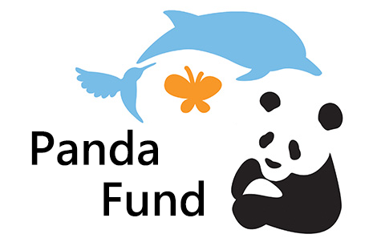
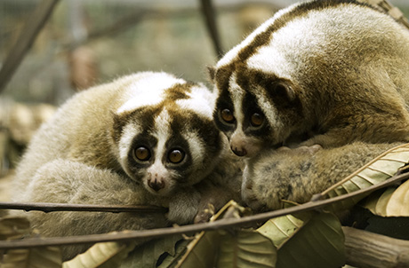
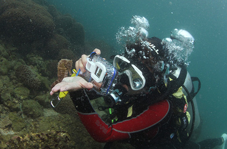
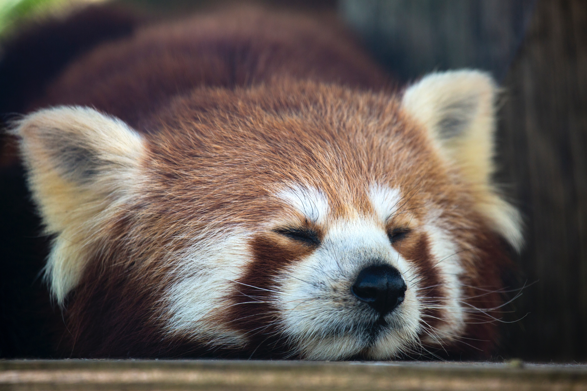

PandaFund
PandaFund is committed to advocating, facilitating and participating in effective conservation of Asian wildlife, with an emphasis on giant pandas as well as their habitats through partnerships, fundraising, research and education. It envisions a world where Asian wildlife remains biologically diverse under the stewardship of humans, corporations and governments.

Conservation & Research
The Foundation allocates funding to support conservation and research projects in Asia every year. In addition to the giant panda, we support projects on other threatened species and their habitats. Many of the supported species are listed as “Critically Endangered” in the IUCN Red List. These projects mainly aim to understand the species and their habitats, train and engage local communities to support conservation efforts, and formulate sustainable conservation strategies.

Local Conservation Efforts
PandaFund's Cetacean Stranding Response Team has been collaborating with Agriculture, Fisheries and Conservation Department to investigate the dolphin stranding cases in Hong Kong. Samples collected from the stranded dolphins provide important information about local cetaceans, including age, sex, pathogens and the causes of death, which enables conservationists to better conserve the animals and their habitats. The Foundation also conducts the seahorse survey and tagging project which could generate useful data and help formulate effective conservation management plan for the species.
Community Education
The education programmes of the PandaFund aim to inspire a new generation of conservationists, enhance knowledge and improve facilities, as well as advocate and engage the public for conservation action. PandaFund provides local university student a chance to have first-hand experience in the conservation field across Asia, hence, to encourage them to consider joining in conservation as their career. Learn more about the Foundation’s education and advocacy activities.
